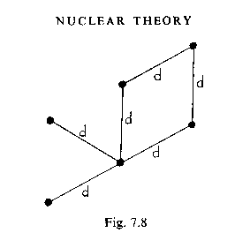
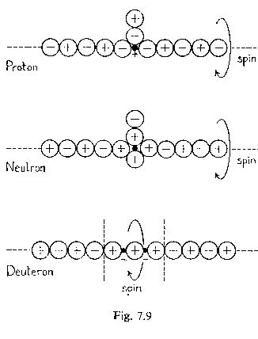
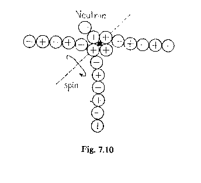
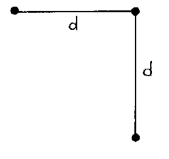
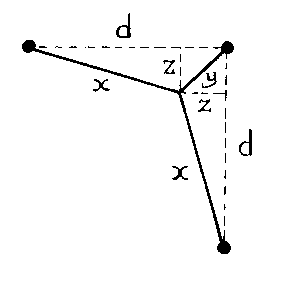
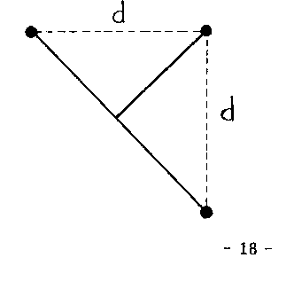
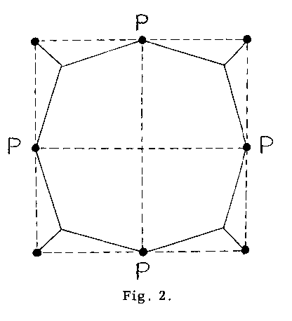
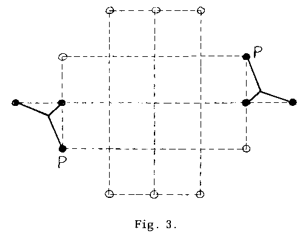

THE CHAIN STRUCTURE OF THE NUCLEUS
Being the reproduction of a paper published in 1974 by Sabberton Publications of P.O. Box 35, Southampton, England aimed at interesting readers in the author's books: Physics without Einstein (1969) and Modern Aether Science (1972)
Copyright, Harold Aspden, 1974
ABSTRACT
The atomic nucleus is shown to have a form
determined by the quantum structure of a
Dirac-style vacuum. Nucleons occupy a series
of holes in the structured vacuum forming a
shell about a core region of unoccupied holes.
These nucleons are linked by electron-positron
chains. The lattice spacing can be related to
the binding energy of the nucleus in precise
quantitative terms. The special position of Fe
56 in the nuclear packing fraction curve is
explained in terms of the cubic symmetry of the
lattice system, the optimization of interaction
energy with the core charge and the energy
minimization of the chains.
INTRODUCTION
This paper has been prompted by recent developments in
elementary particle research having bearing upon a theory
published in 1969. Chapter 7 of the author's work Physics
without Einstein incorporated some new ideas about nuclear
structure. It was argued that nucleons are located at fixed
lattice positions in a cubic structure and are linked by chains of
electron-positron pairs. Each chain had association with what
are now called partons. The mass deficit due to the negative
interaction between a proton-sized parton and a pion-sized
parton was deemed to balance the mass of the chain of electrons
and positrons. Indeed, it was the energy of combination of
these two heavy particles to form a nucleon at a nuclear lattice
position which was the source of energy creating the electron-positron chain.
These ideas have progressed over the past five years and it
is appropriate now to publish some of these developments. The
author is indebted to Dr. D.M. Eagles of the National Standards
Laboratory, Sydney, Australia for helpful communications and
encouragement. Dr. Eagles recently drew to the author's
attention a paper entitled 'Parton Chains in the Nucleus' by
Wojciech Krolikowski, at p. 2922 of Physical Review D of
1 November 1973. It is this which has stimulated the publication
here of some interesting advances of the chain nucleus theory at
this stage of its development. The theory proposed offers scope
for very detailed computational analysis of the structure of
individual atomic nuclei.
A preliminary note about quark theory is appropriate before
the structure of the atomic nucleus is analysed. This is
important because it is the author's contention that the proton
does, indeed, comprise three particles as demanded by quark
theory. Such a structure of the proton was presented in
Physics without Einstein but in the form of a positive particle
having the charge of the positron and associated with an electron-positron pair.
THE QUARKS
From a study of electron and neutrino scattering from
protons Feynman writing in Science at p. 601 of the 15 February
1974 issue has been able to show that protons have structure as
if they comprise a plurality of particles of more fundamental
nature, the so-called quarks. His paper entitled 'Structure of
the Proton' has the introduction:
Protons are not fundamental particles but seem to be made
of simpler elements called quarks. The evidence for this
is given. But separated quarks have never been seen. A
struggle to explain this seeming paradox may be leading us
to a clearer view of the precise laws of the proton's
structure and other phenomena of high energy physics.
Feynman explains how, on quark theory, there are three
kinds of quark denoted u, d and s. The s and d quarks have
charge -1/3 and the u quark charge +2/3 that of the positron.
The s quark has higher mass than the d and u quarks which
have the same mass. From this he presents a diagram showing
how three quarks can combine to produce ten different particles:
Feyman's quarks| Strangeness | | | | |
| -3 | sss | | | |
| -2 | ssd | ssu | | |
| -1 | sdd | sdu | suu | |
| 0 | ddd | ddu | duu | uuu |
| Charge | -1 | 0 | +1 | +2 |
Now the unsatisfactory feature of quark theory is this
concept that charge can be quantified in units which are one
third or two thirds that of the electron or positron. It would
be so much more satisfactory if Nature gave us a system of basic
particles based exclusively upon charges which are measured in
terms of the unit charge of the electron or positron. A little
speculation shows how this is possible, provided we pay
attention to some of the ideas presented to us by Dirac. It is
well known that Dirac has proposed that the vacuum state is an
aether permeated by quantum states filled by negative mass
electrons. This implies that the vacuum has states with which
particles can be associated and in which a negative charge of -1
electron units will pass undetected, being somehow neutralized
by the vacuum medium. In these states the vacuum appears to
add the charge +1. A particle can exist independently and not
occupy such a state. Then we need add no charge to its own
charge. On this basis, consider the following diagram:
Aether but no Quarks| charge | -1 | -1 | +1 | +1 |
| state | 0 | +1 | 0 | +1 |
| net charge | -1 | 0 | +1 | +2 |
Given a combination of three charges, each of which can be -1
or +1, and recognizing that stability criteria forbid three
negative charges and three positive charges from combining,
we must have a net charge of +1 or -1. Also, if we can have a
free particle or one occupying a vacuum-polarized position,
effectively adding +1, we see scope for four different charge
entities. It follows that if the s, d and u quarks have charges
+1 or -1, but masses as assumed on normal quark theory, we
can have ten particles satisfying the observed charge system,
but without recourse to the fractional charge features of quark
theory.
It is therefore submitted that, since no experimental
evidence exists supporting the fractionally-charged quarks but
since experimental evidence does support other features of
quark theory, then the alternative is to accept that some features
of Dirac's aether theory need scrutiny.
ATOMIC MASS
Bernstein writing in Annals of Physics, 69, 1972, p. 19 has
recently pointed out the need to incorporate 'holes' as
constituents of an atomic nucleus. His reason is coupled with
the explanation of energy levels and the inadequacies of the existing shell models. The approach we will take here is to
examine the possibility of substituting nucleons for electrons in
the Dirac continuum. We will presume a hole structure forms
around the charge core of the nucleus and that the holes are
occupied by negatively charged nucleons. This imparts mass
to the nucleus but the charge of these nucleons is merged into
the continuum. Interesting quantitative verification of this
principle is available.
It is generally believed that an isolated electric charge will
attract an equal charge of opposite polarity and so one imagines
that two equal and opposite charges will pair together and form
a neutral aggregation. Yet, Earnshaw's theorem denies that
two equal and opposite electric charges can rest adjacent one
another in stable equilibrium unless they are immersed in an
enveloping electrical medium. Dirac's continuum would, in
effect, be such a medium. The observed vacuum polarization
adjacent an atomic nucleus supports the exception also. Therefore charge neutralization should occur. Why then is the atomic
nucleus itself not a neutral entity?
The answer is found from classical electrostatic theory.
Laplace proved that the outward forces due to mutual interaction
of a surface charge on a conductor are only half the forces
exerted by the field on similar free charge just outside the
surface. Thus when an electron is added to the surface of a
conductor to charge it, a free electron migrates from the atomic
lattice system of the conductor and joins the added electron.
Together the electrons form a surface charge just outside an
inner charge of opposite polarity and half the magnitude. This
latter is the residual charge left by the ionized lattice. This is
a displacement phenomenon. The field on each electron is zero
because the displaced electron has created positive and negative
influences which cancel. The field away from the conductor is
that due to the single added electron. In our atomic case,
however, we have no displacement. Instead, a spherical shell
of charge can centre upon a core of opposite polarity of half its
strength and be held stable. A core of Ze charge can and will
form a stable aggregation with a surrounding shell of -2Ze
charge. If these added charges are not electrons but are negative nucleons then the atomic mass number A should be 2Z.
If the nucleons are uniformly distributed over the volume of a
sphere because they form in a structure of some kind then the
same principles of Laplace apply except that a charge of -2.5Ze
can be aggregated and held stable. This tells us to expect the
ratio A/Z to increase from 2.0 to 2.5 as an atomic nucleus formed
in shells increases in size.
In line with Bernstein's ideas we need to recognize that
'holes' are part of the nucleus. These cancel the effects of the
nucleon charge. From another viewpoint we might say that
space is pervaded by an electrically-neutral continuum which
nevertheless contains discrete negative charges (electrons or
the like) in a positively charged background continuum. Heavy
negatively charged nucleons can occupy holes from which the
negative charges are displaced. However, these nucleons tend
to nucleate, if only by stronger gravitational effects, in regions
immediately surrounding the atomic core charges Ze. Thus the
atomic nucleus is formed, and it may have structural form
characteristic of the properties of this pervading medium.
The analysis relating A and Z just presented has bearing
upon nuclear stability. Z sets a limit upon the value of A, but
one may expect the exact relationships to depend upon the
structural links between the nucleons.
This concept has already been presented in the author's
1972 book 'Modern Aether Science'. The relevant part of
chapter 14 of this work is reproduced below.
The Nuclear Aether
The physics of the aether is to many minds the physics of the
nineteenth century. The twentieth century has so far been concerned with the physics of the atom and its quantum behaviour.
Physics has assumed importance in industry primarily because
electrical technology in the semiconductor field has become the
province of the physicist rather than the electrical engineer.
Also, physics has now an undeniable place of importance because everyone is all too aware of the energy hidden inside the
atomic nucleus. For this reason the minds of many research
physicists are technology-orientated. Theoretical physics is
complicated, the aether is dead and who has the time anyway to
be concerned with such an antiquated topic! The more open-minded may say that if the aether has a place it is in cosmology;
it is certainly not in the field of the nucleus. But let us see if we
can dispel this belief.
Is there anything about the atomic nucleus we cannot explain?
The atomic mass does not increment in proportion to the atomic
charge. It seems that over a range of atoms of low atomic mass
the number of nucleons is approximately twice that of the
number of proton charge units in the nucleus. The nucleons
comprise the protons and neutrons believed to form the
nucleus. At high mass numbers the ratio of two increases
roughly to about two and a half. An explanation of this would
help our understanding of nuclear physics. Does the reader
already have such an explanation? If not, perhaps the following
analysis will have some appeal.
Consider an electric charge surrounded by a concentric
uniform spherical distribution of discrete charges of opposite
polarity. Now calculate the electrostatic interaction energy of
such a system. This quantity will be found to be negative until
the spherical charge distribution has a charge exactly double the
magnitude of the central charge. Thereafter we would have
positive interaction energy signifying instability, because the
'binding' energy associated with the negative polarity has
ceased to 'bind'. We may expect, therefore, an entity to form as
a stable aggregation in which the central charge acquires an
enveloping double charge of opposite polarity, assuming the
spherical distribution. If we consider instead a central charge
with a uniform spatial charge distribution surrounding it,
bounded by a sphere, then instability sets in when the surrounding charge is two and a half times that of the core. Between
these two limiting examples, we could have, say, charge distributed in two concentric shells of unit and double unit
radius, the charge content being proportional to the area of the
spherical shell form. This gives a ratio of 2.166 for stability.
It needs little imagination to recognize the relevance of this to
our nuclear problem. The atomic mass number is a measure of
the number of negative nucleons clustered around a central core
of charge. This charge has negligible mass compared with the
nucleon mass contribution but the charge is the positive charge
we regularly associate with the atomic nucleus. We need not
speak of a combination of neutrons and protons to explain
qualitatively the numerical difference between atomic number
and atomic mass number. Somehow the charges of the nucleons
are not detected, because we well know that the atomic electrons
only react to the central charge. They ignore the nucleon
charges just as they ignore charges in the aether medium.
Indeed, the electrons may see these nucleon charges as they see
the aether. In fact, the nucleons may be deemed to be arrayed
in a structure and to have displaced negative aether charge so as
to substitute themselves in the structured form of the aether
itself. Their charge is undetected just as the mass of a buoyant
body goes undetected in a fluid of equal mass density.
Hence, we need to invoke our aether. Also, we see support for
the cubic lattice distribution of aether charge. An oxygen
nucleus can be adequately populated by a single shell of discrete
charges. There are 26 charges disposed in a regular cubic system
about a central charge and 16 of these are presumably replaced
by negative nucleons. The two to one ratio applies, because the
oxygen atom has a atomic number of 8. Now take chromium,
for example, which has an atomic number of 24. Here, we might
expect charge to be distributed over another shell as well. The
stability condition, calculated for idealized spherical distributions, requires 2.166 times as many nucleons as units of central
charge. Hence an atomic mass number of 52, as is found.
Similarly, for heavier atoms we find an appropriate relation
between the two quantities conforming with this theory.
It has to be accepted from this that the nucleus consists of a
central charge surrounded by a cluster of regularly spaced
nucleons of negative charge. As the author has explained in his
book Physics without Einstein, the nucleons form into a lattice structure with bonds joining the nucleons and, additionally,
pions contributing to the energy of the bonds also derive their
energy from an interaction with the nucleons. These features of
the nucleus modify the mass and add some complication.
Different isotopic forms may depend upon alternative structure
configurations rendered possible by the different bond positions
available. This is a matter for further analysis. When the above-mentioned book was published the author supposed the
nucleons to be formed as a system of neutrons and protons, as is
conventional. The later realization of the stable charge system
introduced in this chapter, however, has led to a revision of the model. All the nucleons are the same. They are negative particles
of mass approximating that of the proton.
Contrary to established theory, the author's proposal is that
the enveloping nucleons are neutralized by the occupancy of
vacuum states. The mass of the atomic nucleus is essentially
that of these neutralized nucleons and. their related electron-positron chains.
Some recent experimental evidence from research at the
Brookhaven National Laboratory was reported by Bugg et al in
Physical Review Letters, 31, 1973 at p. 475. This research
indicates an abnormally-high probability that a tenuous halo of
neutrons may surround the central charge of the atomic nucleus.
This seems to add support to the role of the vacuum state in
compensating charge effects due to nucleons and gives strength
to the author's ideas concerning a Dirac-style aether. Also
encouraging is the reported activity of Lee and Wick of Columbia
University in studying the effects of the properties of the
vacuum upon the atomic nucleus. This is mentioned in Science
at p. 51 of the 5 April 1974 issue.
NUCLEAR RADII
It is interesting to digress to examine a recent proposal by
Ross writing in II Nuovo Cimento, 9A, May 1972 at p. 254. Ross interprets the muon as an electron orbited by a massless spin-1
wave and we will contrast this with a classical electron concept.
Ross has suggested that a particle might orbit the electron
at its classical radius. By regarding the particle as having zero
mass and applying the principles of General Relativity, Ross
then shows that this orbit would be a null geodesic and is able
to calculate the energy involved. Though at pains to show that
the massless particle is not a normal photon, Ross must have
contemplated this possibility. He derives the quantitative result
that mμ = me(1+ 3/2α), where α is the fine-structure constant. This gives the muon mass mμ as 206.554 times the electron mass me, in comparison with the observed ratio of 206.767. It is interesting then to note that had we regarded the electron as a mere sphere of electric charge of radius b and presumed a disturbance of some kind to ripple around it at this radius but at velocity c, we would have reason to derive a disturbance frequency of c/2πb. Multiplied by h this could represent energy,
particularly if we are alive to the possibility that the mechanism
of the photon may be involved in this model. Such energy, in
mass terms, when added to the mass of the electron, gives a
total mass of me(l + e2/αbmec2), since α is 2πe2/hc. Then one
can see by analogy with Ross' result that the muon mass could be
derived with the same quantitative success if the rest mass
energy of the electron were 2e2/3b. It is interesting then to
note that this is exactly the rest mass energy found in classical
works from the study of the electromagnetic properties of the
electron.
The purpose of this is to show that we need not appeal to
General Relativity to derive quantitative results in accord with
Ross' discovery. On the other hand Ross has come to his result
by careful qualitative analysis and has argued that his muon
should not affect the applicability of quantum electrodynamic
theory. Our object in this paper is not to treat the problem of
the muon, but rather to take the classical model of the electron
and, guided by the quantitative result emerging from this
analogy with Ross' speculations, examine how the classical
model can be tailored to suit larger particle structures,
particularly the atomic nucleus. We can be encouraged also by a statement made by Dirac in Scientific American in May 1963.
He wrote:
I might mention a third picture with which I have been
dealing lately. It involves departing from the picture of the
electron as a point and thinking of it as a kind of sphere with
a finite size .... the muon should be looked on as an excited
electron. If the electron is a point, picturing how it can be
excited becomes quite awkward.
The method of reverting to a physical model of the electron
also takes strength from observations made by Grandy on the
classical Lorentz-Dirac theory of electrodynamics. Grandy was
writing at p. 738 of the February 1970 issue of 11 Nuovo Cimento,
v. LXV. Referring to the problem of Schott energy (discussed by the author at p. 97 of his book Modern Aether Science), he said
that an insight into its nature was outside the scope of classical
electrodynamics and also that "no relief is to be found in quantum
electrodynamics, either, which is totally unable to account for
the structure of the electron". However, Grandy's comments
about the impossibility of quantum electrodynamics helping an
understanding of electron structure prevail, though this does
not preclude the photon-electron interaction or combination to
account for elementary particles or atomic nuclei.
The muon can behave as an atomic nucleus. In muonium a
positive muon replaces the proton in an ordinary hydrogen atom.
Also, the muon can replace the electron in normal atoms.
A study of such so-called exotic atoms is reported at p. 148 in the
March 1972 issue of Physics Bulletin by Kim who refers to
evidence of vacuum polarization effects and data showing that the
charge radii of nuclei are given by R=roA1/3 where ro is approximately 1.2x10-13 cm and A is mass number. It is standard to relate the radius with the mass number, but since we are referring to charge radii it is very interesting to examine more detailed data and perform a conversion putting R proportional
to Z1/3, where Z is the charge number. Such data is available
from Condon and Odishaw's handbook of Physics, 2nd Ed. at
p. 9-13. According to these data, the core appears spherical
and the charge has a root mean square radius R given by the
formula in ro, where ro ranges between 0.91 and 1.05 in units of 10-13 cm as A varies between 12 and 209. We may instead express R as soZ1/3 to find that s would vary between 1.22 and 1.32 in units of 10-13 cm, a variation of less than 4% about the mean, in contrast with ro which varies more than 7% about the mean.
These data show that it is better empirically to look for
dependence upon Z rather than A. This may well be the outcome as better measurement data are forthcoming.
Nuclear Charge Radii| A | Z | A/Z | ro | so |
| 12 | 6 | 2.00 | 1.05 | 1.32 |
| 40 | 20 | 2.00 | 1.02 | 1.28 |
| 51 | 23 | 2.22 | 0.97 | 1.26 |
| 115 | 49 | 2.35 | 0.92 | 1.22 |
| 122 | 51 | 2.39 | 0.93 | 1.24 |
| 197 | 79 | 2.49 | 0.91 | 1.27 |
| 209 | 83 | 2.51 | 0.93 | 1.27 |
Numerous writers (eg. Larmor, Phil. Mag., xliv (1897) p. 503 is but a suimple one) have formulated the energy of the electron
of charge e and radius b as 2e2/3b. In the author's book
Physics without Einstein it is shown at p. 209 that this indicates
a uniform field within the radius b and corresponds to a charge
density in cgs. units of e/2πxb2 at radius x. The root mean square radius of such a charge distribution is b/21/2. The value of b is calculable from the rest mass energy of the electron 8.2x10-7 ergs, and with the value of e being 4.8x10-10 esu, gives b as 1.87x10-13 cm and so its root mean square is 1.32x10-13 cm and there is a remarkable comparability between this electron radius and so particularly for smaller Z values.
It seems obvious from this that if we take the classical
formula given above for the size of the electron and then apply
this also to the positron we have only to conceive the charged
core of an atomic nucleus as an aggregation of Z positrons
occupying the same volume as Z separate positrons and the
root mean square radius of the resulting core is 1.32Z1/3x10-13 cm. This fits the experimental data quite well.
One is led to suspect that the hydrogen nucleus will be the
same size as a positron, which makes Ross' observations about
the nature of the muon all the more intriguing. However,
accepting the empirical implications just presented, there is
need for caution in interpretation. One may wonder how the
inner electrons screening the atomic nucleus really escape
involvement with the measurement of the core radius.
Collectively the majority of the electrons associated with the
atomic nucleus happen to exhibit an aggregate volume of just
the right order to conform with the measurements of core size.
The interesting feature of the analysis is the applicability of
the classical formula for the size of an electric charge. Also,
the table above indicates a relationship between A and Z such
that as Z increases A/Z varies from 2 to a value close to 2.5.
This satisfies the theoretical proposal already made.
NUCLEAR CHAINS
It is appropriate to reproduce next an extract from the
author's Physics without Einstein, noting that some of the
views expressed are subject to modification below. The text
preceding this material involved a rigorous analysis of the
structure of the vacuum and the computation of a lattice
dimension d, which was found to be 6.37x-13 cm. It is also
noted that since that work was published, Dr. D.M. Eagles and
Dr. C.H. Burton have made careful calculations using the
computation facilities of CSIRO in Australia and the results
reported in Physics Letters at p. 423 of the 23 October 1972
issue support the value just given for the lattice dimension d of
the likely aether structure.

Nuclear Bonds
What is the form of the nuclear bonds? Each of the six nucleons
in Fig. 7.8, three protons, say, and three neutrons, identified by
the full bodied circles, has a bond of its own providing one of the
links. These bonds are the real mystery of the atomic nucleus. We
will assume that their most logical form is merely a chain of electrons
and positroins arranged alternately in a straight line. The reason for
the assumption is that electron-positron pairs are readily formed in
conjunction with matter, and we have seen how an in-line configuration of alternate positive and negative particles has proved so helpful
in understanding the deuteron. Stability has to be explained. FirstIy,
the chain is held together by the mutually attractive forces between
touching electrons and positrons. Secondly, it will be stable if the
ends of the chain are held in fixed relationship. This is assured by the
location of the nucleons which these bonds interconnect. In Fig. 7.9 (below) it is shown how the bonds connect with the basic particles. In the examples shown, the nucleons are positioned with a chain on either
side and are deemed to be spinning about the axis of the chain.
Intrinsic spin of the chain elements will not be considered. It cancels
as far as observation is concerned because each electron in the chain
is balanced by a positron. In Fig. 7.10 it is shown how, for the
neutron, for example, the spin can be in a direction different from
that of the chain. Also, it is shown how another chain may couple at
right angles with this one including the neutron. Note, that the end
electron or positron of the chain does not need to link exactly with
the nucleon. Therefore, it need not interfere with the spin.

We will now calculate the energy of a chain of electrons and positrons. For the purpose of the analysis we will define a standard energy unit as e2/3a. This is the conventional electrostatic energy of interaction between two electric charges e of radius a in contact. Since 2e2/3a is mc2, as applied to the electron, this energy unit is 0.75mc2. On this basis , a chain of two particles has a binding energy of -1 unit. if there are three particles the binding energy is the sum of -1, 1/2 and -1, since the two outermost particles are of opposite polarity and their centres are at a spacing of 4a and not 2a.

For N particles, with N even, the total interaction energy is:
(N-1) + (N-2)/2 - (N-3) + .... 2/(N-2) - 1/(N-1)
which is -Nlog2, if N is large. If N is odd, the last term in the
above series is positive and the summation, for N large, is 1-Nlog2.
To find N we need to know how many particles are needed for the
chain to span a distance d. d can be related to m by eliminating r from
equations (4.1) and (6.60).
These are equations in the author's book Physics without Einstein published in 1969:
r = h/4πmc .... (4.1)
hc/2πe2 = 144π(r/d) ... (6.60)
Then d/a is found using 2e2/3a=mc2. It is 54π, so
N may be, say, 169, 170 or possibly 168, particularly if N has to be
even and there has to be space for any nucleons. For our analysis we
will calculate the binding energy of the chain and the actual total
energy of the chain for all three of these values of N. The data are
summarized in the following table.
Chain Energy Calculation| N | 168 | 169 | 170 |
| -Nlog2 | -116.45 | -117.45 | -117.83 |
| Binding Energy (units) | -116.45 | -116.14 | -117.83 |
| Binding Energy (mc2) | -87.34 | -87.11 | -88.38 |
| Add Self Energy (mc2) | 168 | 169 | 170 |
| Total Chain Energy | 80.66 | 81.89 | 81.62 |
| Ground State Correction | 0.61 | 0.62 | 0.62 |
| Corrected Energy (mc2) | 81.27 | 82.51 | 82.24 |
In the above table the binding energy has been set against the self
energy of the basic particles and a correction has been applied of
amc2 per pair of particles to adjust for the fact that mass is not referenced on separation to infinity, as was discussed earlier in this
chapter. The total mass energy of the chain is seen to be about 81
or 82 electron mass energy units, depending upon its exact length.
This shows that while the electron-positron chain proposed will
provide a real bond between nucleons linked together to form an
atomic nucleus, it will nevertheless add a mass of some 81m per
nucleon. This seems far too high to apply to the measured binding
energies. Furthermore, it is positive and the nature of binding energy
is that it must be negative. This can be explained by introducing the
π-meson or pion, as it is otherwise termed.
The Pion
When an electron becomes attached to a small but heavy particle
of charge e, the interaction energy is very nearly -e2/a or 1.5 times the energy unit mc2. This means that the mass of the heavy particle is effectively reduced when an electron attaches itself to it and becomes integral with it. If we go further and seek to find the smallest particle which can attach itself to a heavy nucleon to provide enough surplus energy to form one of the above-mentioned electron-positron chains, we can see how this nucleon plus this particle plus this chain
can have an aggregate mass little different from that of the initial
nucleon. This can reconcile our difficulties. The fact that an electron
can release the equivalent of about half its own mass indicates that
to form the chain of mass 81m we will need a meson-sized particle of
the order of mass of the muon or pion. To calculate the exact
requirement we restate the inverse relationship between the mass m
of a particle of charge e and its radius a:
2e2/3a = mc2 ... (7.8)
This applies to the electron, but it can also be used for other particles
such as the meson and the H particle.
It may then be shown that if two particles of opposite polarity
charge e are in contact, their binding energy, e2 divided by the sum of their radii, is 3c2/2 times the product of their masses divided by the sum of their masses. Let Mo be the mass of the meson involved and M be the mass of the H particle. The surplus energy is then:
3MoMc2/2(Mo+M) - Moc2 ... (7.9)
Starting from this basis, we will now seek to improve this
1969 account. Firstly, a very important advance emerges if we
take the equation (7.9) from the text and find the solution which
gives maximum surplus energy. Thus we put the expression
at a minimum with M set at 1836m and Movariable. Simple
analysis then shows that for this condition Mo is M(3/2)1/2-M or 0.225 M or 413m. This is higher than the pion mass contemplated above. The energy released is found to be
(0.225)2M or 93m. Thus subtracting the chain energy of
about 81m we find that each chain together with the parton pair
represented by equation (7.9) will contribute mass some 12
electron units m less than that of the proton.
If our atomic nucleus comprised simple chain bonds and
had one per nucleon we should find that the mass of a nucleus
would be 1824 times the number of nucleons when measured in
terms of electron mass units. In fact this mass varies. As the
number of nucleons increases the unit mass rapidly decreases
through a minimum of about 1820 for iron and then rises
gradually until it is 1823 for the largest nucleus.
There is a very interesting explanation for this effect. Note
that the energy of a chain is proportional to its length. Then ask
how three nucleons arranged as below can be linked by chains.
Three configurations are shown in Fig. 1.

Fig. 1(a)

Fig. 1(b)

Fig. 1(c)
We now assume that the configuration adopted will be that
of minimum energy, that is minimum total chain length. Simple
analysis shows that 2x+y can be less than 2d. The minimum
value is 1.933d when z is approximately 0.2d. This means that
at the corner of the nuclear lattice the energy of a normal chain
of length d is effectively reduced to 0.967 of its normal value,
that is, from 81m to 78m. There is a decrease of three electron
mass units whenever a chain is able to cut a corner so to speak
as in Fig.1(b).
Now consider a nucleus of iron and let us suppose that the
charge of the nucleus is due to 26 vacancies in the vacuum
structure, an absence of 26 electron-sized charges which
normally neutralize the vacuum state. This core will be
surrounded by nucleons occupying other lattice sites, 56 in
number. Now note that a 3 by 3 by 3 array of a cubic lattice
system comprises 27 sites and that there are 6 faces to this cubic
array each having a 3 by 3 array in adjacent lattice planes.
This is 54 sites. We thus see how iron can be close to an
optimum state of symmetry. Also note how most of these 54
sites are associated with a chain of minimum energy. This is
evident from Fig. 2.

It seems likely that in the iron nucleus of atomic mass
number 56 there are 6 arrays of 8 nucleons as depicted in Fig. 2
and that four of these arrays have, as illustrated in Fig. 3,
central nucleons linked both to a nucleon in an outer lattice
position and to one of the nucleons at P in Fig. 2.

In every respect, therefore, iron with an atomic mass
number of 56 is the nucleus for which every chain is at the low
energy. Hence it is not surprising that it appears to be a most
stable nucleus. Also, our theory has shown the unit mass to
be three electron rrass units below the extremp- of having all
chains lie on the lattice lines. Such an arrangement can be
expected to be more nearly applicable in very large nuclei
where multiple shells of nucleons exist and we have seen hoiv
such large nuclei have a unit mass higher by three electron
masses.
But it is of interest to ask about the Helium 4 nucleus. This
appears to have four normal chains in its most natural config-
uration. The unit mass of the Helium 4 nucleus is about 12.5
electron mass units below that of the proton. This compares
with the figure of 12m deduced on the basis of the chain energy
of 81m.
CONCLUSION
From such analysis it is concluded that we are arriving at
results which encourage rigorous calculation of detailed
structure. The fact that the value of 80.5m is indicated from
the Helium nucleus as the mass contribution of a chain of
standard lattice length checks very well indeed with the data
given in the reproduced tabulation from the author's Physics
without Einstein'. By analysing the atomic nucleus and the
dependence of its mass upon its size we can deduce the lattice
dimensions of the structured vacuum state and check a theory
which has independently afforded an exact evaluation of
Planck's constant, as reference to the above-mentioned paper
by Eagles will show, and an exact evaluation of the Constant of
Gravitation. For the latter refer to the full text of Physics
without Einstein or a new work Gravitation due to be
published by the same author early in 1975.
The author is, of course, interested in any work which may
advance the ideas presented above and invites correspondence.
June 30, 1974
H. Aspden
Acres High,
Hadrian Way,
Chilworth,
Southampton,
SO16 7HZ,
England.
Readers interested in this subject should take note that the above was published in 1974, one year before the author collaborated with Dr. D. M. Eagles as co-authors of a paper giving a definitive account of the theoretical evaluation of the proton-electron mass ratio. It appeared in Il Nuovo Cimento, 30A, p. 235 (1975), a scientific periodical published in English by the Italian Institute of Physics. Note that when the author wrote Physics without Einstein he had found by rigorous analysis of a problem concerned with the radiation of field angular momentum that the standard Bohr magneton quantum of h/2π implied a source in which an electron is in orbit around a positive central body having a mass that was 1817.8 times that of the electron. This was seen as a route to calculating theoretically the mass of the proton and the possible factors that could modify this value to bring it up to a little above 1836 were mooted in pages 142-144 of that book. Then, in the later pages 147-149, there was an account of how heavier atoms could form by building what was termed a 'chain' structure linking neucleons which form the atomic nucleus. Now, in writing the text of the 1974 paper presented above and written, as already mentioned, to attract attention to Physics without Einstein (1969) and Modern Aether Science (1972), the author saw the potential of the step of assuming energy adjustments based on maximum release of energy. Note that reference to the 'maximum surplus energy' derived from equation (7.9) as being 413m. This is exactly double the mass-energy of the mu-meson. Here then was the first glimmer of an insight into how the proton might be formed from a mu-meson foundation. It was to lead to that 1975 paper just mentioned and onward research eventually gave the final theory which accounts for proton creation involving the ever-present virtual muon field that is the primary energy source in the quantum electrodynamic underworld of space. As a final note, the reader might wonder a little about the choice of the word 'chain' to describe the electron-positron connecting links. This is deemed preferable terminology to the notion of a 'string' (cf. modern string theory) because the electrons and positrons hold together by the forces connecting adjacent elements and, in any event, the author had not heard of 'string theory' when that 1974 paper was written.
********
�
H. Aspden
February 18, 2001